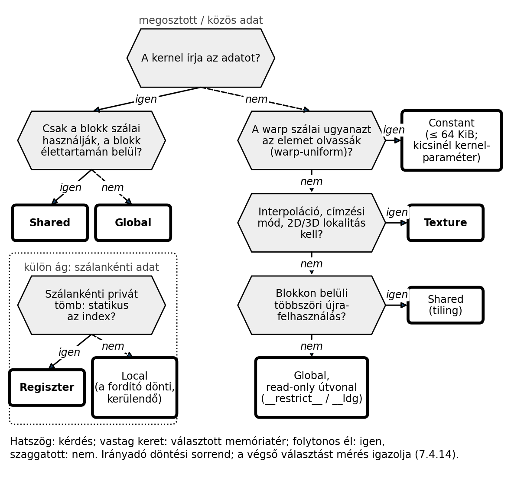

A memóriaterek kiválasztása a CUDA-kernel tervezésének egyik legnagyobb hatású döntése. Nem az a kérdés, hogy „melyik memóriatér a leggyorsabb”, hanem az, hogy egy adott adat melyik memóriatérben éri el a legjobb kompromisszumot a késleltetés, a sávszélesség és a láthatóság szempontjából. A regiszterek gyakorlatilag nulla késleltetésűek, de csak egyetlen szálra látszanak. A global memory a teljes grid számára elérhető, de a DRAM-késleltetés több száz ciklus is lehet. A shared, constant, local és texture terek közé esnek; a helyes választás a hozzáférési mintától, az élettartamtól és az írási/olvasási igénytől függ. Ebben az alfejezetben egy döntési keretet építünk fel, megvizsgáljuk egy kernel memóriaprofilját, majd egy ellenőrizhető laborban elkészítjük a memóriatér-döntési táblázatot.
A memóriatér-választás három műszaki tengelye a következő.
Latency (késleltetés): Az az idő, amennyi egy memóriaművelet elindítása és az adat rendelkezésre állása között telik el. A GPU a késleltetést elsősorban szálak közötti átfedéssel (latency hiding) rejti el, de a forrás memóriatér nagyságrendileg meghatározza a várakozási időt. A regiszterek hozzáférése gyakorlatilag az utasítás végrehajtásának része. A shared memory késleltetése jellemzően ≈ 20–30 ciklus nagyságrendű (architektúrafüggő), míg a global memory elérése cache nélkül több száz ciklust is jelenthet. A constant memória késleltetése broadcast esetén közel áll a regiszterhez, konfliktus esetén viszont drámaian romlik.
Bandwidth (sávszélesség): A másodpercenként átvihető bájtok mennyisége. A global memória sávszélessége a DRAM-ból származik, és tipikusan a GPU egyik legszűkebb erőforrása. A shared memory sávszélessége nagyságrenddel nagyobb, mert on-chip memória. A constant memória széles sávszélességet tud biztosítani, ha a warp minden szála ugyanazt a címet olvassa (broadcast). A local memória valójában a global memóriába kerül, tehát sávszélessége a global memoryéval megegyező, hiába neve „local”. A texture memória sávszélessége a textúra gyorsítótáron keresztül a 2D-s térbeli lokalitást használja ki.
Scope (láthatóság): Azt mondja meg, hogy egy adat mely végrehajtási egységek számára elérhető. A CUDA-végrehajtási hierarchiában a szál, a warp, a block, a grid és a host szintjei léteznek. A regiszterek szál-szintűek, a shared memory block-szintű, a global memory grid-szintű, a constant memória grid-szintű (írásra host-oldalról, olvasásra device-szinten), a local memória szál-szintű, de fizikailag global memóriában lakik. A scope megszabja, hogy egy adatot milyen szinkronizációs mechanizmussal lehet megosztani, és milyen élettartamot várhatunk el.
A döntési folyamat első lépése tehát az adat életciklusának és hozzáférési mintájának feltérképezése. Kérdezzük meg:
Ezekre a kérdésekre adott válaszokból áll össze a döntési táblázat.
A korábbi alfejezetekben már bemutattuk az egyes memóriaterek technikai hátterét, itt kifejezetten a kiválasztás szempontjait foglaljuk össze.
A global memory az alapértelmezett nagyméretű, grid-szintű
memóriatér. Ide kerülnek a cudaMalloc-kal allokált
pufferek, a cudaMemcpy-vel feltöltött tömbök és a
kernelparaméterként átadott mutatók által címzett adatok. Használata
akkor indokolt, ha:
A global memory költsége csökkenthető coalesced hozzáféréssel, vectorizált betöltéssel és L1/L2 cache-barát mintával. Ha egy adatot csak egyszer olvasunk, és nincs más lehetőség, akkor a global memory a természetes választás. Ha azonban ugyanazt a blokkon belül többször újraolvassuk, érdemes megfontolni a shared memory-ba másolást.
A shared memory block-szintű, on-chip, programozható, alacsony késleltetésű memóriatér. Akkor válasszuk, ha:
A shared memory mérete korlátozott: SM-enként a konfigurálható shared memória CC 7.5-ön 64 KiB, CC 8.0-n 164 KiB, CC 8.6/8.9-en 100 KiB, CC 9.0-n 228 KiB (az L1-gyel közös tárból; a CUDA Programming Guide értékei alapján, emlékezetből, ellenőrzendő); blokkonként alapesetben 48 KiB, opt-innel ennél több (lásd 6.4). Ha a teljes probléma elférne, akkor is figyelni kell arra, hogy a shared memory használata csökkenti az occupancy-t, mert egy SM-en a blockok száma korlátozott. A döntés során ezért mindig ellenőrizni kell, hogy a shared memória által elért global-memory-megtakarítás nagyobb-e, mint az occupancy-csökkenésből adódó latency-hiding romlás.
A constant memory grid-szintű, olvasható a device számára, de írni
jellemzően a host írhat (cudaMemcpyToSymbol). Akkor
előnyös, ha:
A constant memória broadcast sávszélessége kiváló, de ha egy warpen belül különböző címekről olvasnak a szálak, a hozzáférés sorosodik, és a teljesítmény drasztikusan romlik. Ezért az olyan adat, amelyet a szálak különböző indexekkel érnek el, nem ide való. Ha a táblázat mérete nagy és véletlenszerű indexekkel olvassuk, a global memory vagy a texture memória jobb választás lehet.
A local memory fogalma megtévesztő: ez szál-szintű, de fizikailag a global memóriában tárolódik. Akkor használja a fordító, ha a bemeneti forráskódban szereplő lokális változó nem fér el a regiszterekben, vagy ha a tömb indexelése dinamikus, és a tömb nem konvertálható regiszterekre. A local memória használata rendszerint kerülendő:
A local memory a kernel memóriaprofiljában gyakran a „local load/store” tranzakciókban jelenik meg, és gyengíti a teljesítményt. A döntési táblázatban a local memory elsősorban figyelmeztető bejegyzés: ha a profilban nagy local forgalom látható, akkor a kernel regiszter- vagy shared-memory-kialakítását újra kell gondolni.
A texture memory egy speciális, read-only elérési út, amelyet
textúraobjektumokkal (cudaTextureObject_t) érünk el; a régi
textúra-referencia API a CUDA 12.0 óta nem érhető el (lásd 7.3). Akkor
használjuk, ha:
A modern GPU-ken a textúra memória sok esetben a global memory cache-elt eléréséhez hasonló, így nem szabad automatikusan „gyorsabbnak” tekinteni. A döntés során a textúra akkor indokolt, ha a mintavételi mód, a szűrés vagy a határkezelés hardveres támogatása csökkenti a kód komplexitását, illetve ha a hozzáférési minták miatt a textúra cache jobb találati arányt ad.
A döntési táblázat egy tömör összefoglaló eszköz, amelyet fejlesztés közben a kernel tervezésekor használhatunk. Az alábbi táblázat a CUDA memóriatereit foglalja össze a fő döntési dimenziók mentén. A számértékek nagyságrendi becslések és irányadó küszöbök, hardverfüggőek; mindig az adott GPU compute capability szerint kell pontosítani.
| Memóriatér | Scope | Élettartam | Hozzáférési jellemzők | Írás/olvasás | Jellemző késleltetés | Sávszélesség-osztály | Mikor válasszuk? |
|---|---|---|---|---|---|---|---|
| Regiszter | Szál | Kernel során | Statikus, privát | Írható/olvasható | 0–1 ciklus | Maximum | Minden gyakran használt skalár, kis tömb |
| Local memory | Szál | Kernel során | Privát, de DRAM-ban | Írható/olvasható | 400–800 ciklus (cache-találatnál kevesebb) | Global szint | Kerülendő; stack-tömb és spill esetén kapja a fordító |
| Shared memory | Block | Block futása | Alacsony késleltetésű, on-chip | Írható/olvasható | ≈ 20–30 ciklus (architektúrafüggő) | Nagyon nagy | Blokk-szintű újrafelhasználás, tiling, kommunikáció |
| Constant memory | Grid | Alkalmazás/modul szintű; a host kernelek között írhatja | Broadcast, read-only | Device olvassa, host írja | Broadcast: alacsony; konfliktus: magas | Nagy broadcast esetén | Warp-uniform paraméterek, táblázatok |
| Global memory | Grid | Alkalmazás során | Nagyméretű, cache-elt | Írható/olvasható | 400–800 ciklus | DRAM-sávszélesség | Nagy adatok, grid-szintű megosztás, írás |
| Texture memory | Grid | Alkalmazás során (a textúraobjektum a
cudaDestroyTextureObject-ig, a mögöttes memória a
cudaFree-ig él); a kernel csak olvassa |
2D/3D lokalitás, interpoláció | Device olvassa | Cache-től függő | Változó | Képinterpoláció, szűrés, speciális címzés |
Ez a táblázat a labor alapja is. A mérések során a táblázat sávszélességre és késleltetésre vonatkozó celláit a saját GPU-n mért értékekkel és a kernelprofilból származó mutatókkal támasztjuk alá.
A memóriatér-döntés nem szakadhat el a méréstől. Egy kernel memóriaprofilja azt mondja meg, hogy a kernel futása során milyen memóriaterekből mennyi adatot mozgatunk, milyen hatékonysággal, és hol keletkeznek várakozások. A profil elkészítésének lépései:
Felmérjük a hasznos adatforgalmat. Hány bájtot olvasunk és írunk a global memoryból? Hány bájtot töltünk be a shared memorybe? A hasznos forgalom az algoritmus által ténylegesen megkívánt adatmennyiség.
Megnézzük a tényleges memóriatranzakciókat. A global memória nem bájtonként mozog: a szektor 32 bájt, a gyorsítótár-sor 128 bájt (4 szektor); a 32/64/128 bájtos „tranzakciók” a régi (CC 1.x–2.x) terminológia. A memóriaprofilból kiderül, hogy a kért szektorok hány százalékát használjuk ki. A coalescing hatékonysága a hasznos bájtok és a ténylegesen beolvasott szektorok bájtjainak aránya.
Megvizsgáljuk a shared memory bank konfliktusokat. A shared memory elérési mintája lehet conflict-free, vagy okozhat 2-, 4-, 8-utas konfliktust. A profilban a bank conflictok száma azt jelzi, hogy a döntés egyébként helyes, de a adatelrendezés nem optimális.
Azonosítjuk a local memory spillt. Ha a regiszterhasználat meghaladja a rendelkezésre álló regisztereket, a fordító local memóriába ír. A profilban a local load/store tranzakciók jelennek meg. Ezt a döntési táblázatban a local memória sorához kapcsoljuk.
Értelmezzük a cache találati arányokat. Az L1 és L2 találati arányok megmutatják, hogy a global memory hozzáférésekből mennyit sikerül elkerülni. A shared memory tiling célja gyakran az, hogy a global hozzáférések helyett L1/shared hozzáféréseket használjunk.
Összevetjük a mért sávszélességet a névleges csúccsal. A Roofline-modellből ismert, hogy a kernel lehet memória-korlátos vagy számítás-korlátos. A memóriaprofilból kiolvasott forgalom és idő hányadosa adja a tényleges sávszélességet, amelyet a GPU specifikációjával kell összehasonlítani.
A Nsight Compute ilyen mutatói közé tartoznak például:
l1tex__t_sectors_pipe_lsu_mem_global_op_ld.suml1tex__t_sectors_pipe_lsu_mem_global_op_st.suml1tex__data_bank_conflicts_pipe_lsu_mem_shared.sumsmsp__sass_inst_executed_op_local_ld.sumsmsp__sass_inst_executed_op_local_st.sumgpu__time_duration.sumEzeket a metrikaneveket a Nsight Compute verziója és architektúra szerint ellenőrizni kell, és a laborban a pontos név szerepeljen. A cél az, hogy a memóriatér-döntés számszerűen is igazolható legyen.
Az alábbi labor egy olyan kis CUDA-projektet mutat be, amelyben ugyanaz a feladat több memóriatér-kialakítással fut. A feladat egyszerű: egy bemeneti vektort skálázunk egy konstanssal, eltolunk egy konstanssal, majd blokkonként összegezzük a részeredményeket. A kialakítások lehetőséget adnak a global, constant, shared és local memória szerepének demonstrálására.
param_scale): minden szál kiolvassa a bemeneti
elemet a global memoryból, a scale és offset
kernelparaméterként érkezik (a kernelparaméterek a konstans bankból, a
kernel-argumentum bankból olvashatók), majd kiírja az eredményt. Ez nem
„csak global” változat: a skála nem a DRAM-ból jön.constant_scale): a skála és az offset
__constant__ változó. Egyetlen skalárnál a két változat
hatása elhanyagolható: mindkettő ≈ 8 B/elem DRAM-forgalmú (4 B olvasás +
4 B írás) és memóriakorlátos, így a mért különbség várhatóan a mérési
zajon belül marad. A constant memória előnye ott látszik, ahol egy kis
tábla (pl. 256 együttható) warp-uniform indexszel olvasott
(constant_table), a mérést
ncu --metrics dram__bytes_read.sum,dram__bytes_write.sum
metrikákkal érdemes kiegészíteni.// fordítás: nvcc -O3 -arch=sm_89 -o memlab memlab.cu
// megjegyzés: a kód a labor izolált környezetéhez készült,
// éles rendszeren és hitelesítő adattal ne futtassuk.
#include <cuda_runtime.h>
#include <cstdio>
#include <cmath>
#include <cstdlib>
#include <vector>
#define CUDA_CHECK(call) \
do { \
cudaError_t err__ = (call); \
if (err__ != cudaSuccess) { \
std::fprintf(stderr, "CUDA hiba: %s, fajl: %s, sor: %d\n", \
cudaGetErrorString(err__), __FILE__, __LINE__); \
std::exit(EXIT_FAILURE); \
} \
} while (0)
__constant__ float c_scale;
__constant__ float c_offset;
__constant__ float c_coef[256]; // táblázat a warp-uniform példához
template <int BLOCK>
__global__ void param_scale(const float* __restrict__ x,
float* __restrict__ y,
float scale,
float offset,
int n)
{
int i = blockIdx.x * blockDim.x + threadIdx.x;
if (i < n) {
float v = x[i];
y[i] = fmaf(v, scale, offset);
}
}
template <int BLOCK>
__global__ void constant_scale(const float* __restrict__ x,
float* __restrict__ y,
int n)
{
int i = blockIdx.x * blockDim.x + threadIdx.x;
if (i < n) {
float v = x[i];
y[i] = fmaf(v, c_scale, c_offset);
}
}
template <int BLOCK>
__global__ void shared_reduce(const float* __restrict__ x,
float* __restrict__ block_sum,
int n)
{
__shared__ float sdata[BLOCK];
int i = blockIdx.x * blockDim.x + threadIdx.x;
float v = (i < n) ? x[i] : 0.0f;
if (i < n) v = fmaf(v, c_scale, c_offset); // a kitöltő (i >= n) szálak 0-t adnak
sdata[threadIdx.x] = v;
__syncthreads();
for (int stride = BLOCK / 2; stride > 0; stride >>= 1) {
if (threadIdx.x < stride) {
sdata[threadIdx.x] += sdata[threadIdx.x + stride];
}
__syncthreads();
}
if (threadIdx.x == 0) {
block_sum[blockIdx.x] = sdata[0];
}
}
__global__ void local_penalty(const float* __restrict__ x,
float* __restrict__ y,
int n,
int kMax)
{
// A tmp[] a második ciklusban futásidejű, szálindextől függő indexszel
// olvasott, ezért nem tartható regiszterben: a fordító stack-tömbként
// a local memóriába teszi. A kMax kettőhatvány kell legyen (KMAX = 64).
float tmp[128];
int i = blockIdx.x * blockDim.x + threadIdx.x;
if (kMax > 128) kMax = 128; // védelem a túlindexelés ellen
if (i < n) {
for (int k = 0; k < kMax; ++k) {
tmp[k] = x[i] * static_cast<float>(k);
}
float sum = 0.0f;
for (int k = 0; k < kMax; ++k) {
sum += tmp[(k + i) & (kMax - 1)]; // futásidejű index: local memória
}
y[i] = sum;
}
}
// Ellenpélda: a warp szálai különböző címeket olvasnak, a hozzáférés sorosodik
__global__ void constant_table_divergent(const float* __restrict__ x,
float* __restrict__ y, int n)
{
int i = blockIdx.x * blockDim.x + threadIdx.x;
if (i < n) y[i] = x[i] * c_coef[threadIdx.x & 255];
}
// Warp-uniform konstans-táblázat: a blokk minden szála ugyanazt az elemet olvassa (broadcast)
__global__ void constant_table(const float* __restrict__ x, float* __restrict__ y, int n)
{
int i = blockIdx.x * blockDim.x + threadIdx.x;
if (i < n) y[i] = x[i] * c_coef[blockIdx.x & 255]; // azonos cím a warpon belül
}A local_penalty kernelben a tmp tömb mérete
128 float. A fordító akkor tudná regiszterben tartani, ha minden
hozzáférést fordítási időben ismert indexszel oldana fel (például
kibontott ciklussal). A második ciklus indexe,
(k + i) & (kMax - 1), a szálindextől függ, ezért
futásidejű, így a tömb a local memóriába kerül; a KMAX = 64
kettőhatvány, tehát az összeg permutációja változatlanul 2016. Egy
egyszerű, tmp[k] indexű olvasásnál a fordító a ciklust
kibonthatná, és a tömb regiszterbe kerülne, a local forgalom nem
látszana. Ellenőrzés: nvcc -Xptxas -v kimenetében nem nulla
„bytes stack frame” várható (nem futtattuk, ellenőrzendő); a profilban a
local tranzakciók számát kell nézni. Ez stack-tömb (dinamikusan indexelt
privát tömb), nem regiszter-spill; a spill a regiszterek kiszorítása,
amit a ptxas -v spill stores/loads sora
jelez.
A host oldalon a mérési ciklus (mind a hat változatot ugyanúgy mérjük, és az eredményt ellenőrizzük; a kódot nem fordítottuk és nem futtattuk):
int main()
{
constexpr int N = 1 << 22;
constexpr int BLOCK = 256;
constexpr int GRID = (N + BLOCK - 1) / BLOCK;
constexpr int ITER_WARMUP = 5;
constexpr int ITER_MEAS = 10;
constexpr int KMAX = 64;
size_t nBytes = N * sizeof(float);
std::vector<float> h_in(N, 1.0f), h_out(N);
std::vector<float> h_sum(GRID);
float *d_x, *d_y, *d_sum;
CUDA_CHECK(cudaMalloc(&d_x, nBytes));
CUDA_CHECK(cudaMalloc(&d_y, nBytes));
CUDA_CHECK(cudaMalloc(&d_sum, GRID * sizeof(float)));
CUDA_CHECK(cudaMemcpy(d_x, h_in.data(), nBytes, cudaMemcpyHostToDevice));
float scale = 0.5f, offset = 1.0f;
CUDA_CHECK(cudaMemcpyToSymbol(c_scale, &scale, sizeof(float)));
CUDA_CHECK(cudaMemcpyToSymbol(c_offset, &offset, sizeof(float)));
std::vector<float> h_coef(256);
for (int k = 0; k < 256; ++k) h_coef[k] = 1.0f + k * 1e-3f;
CUDA_CHECK(cudaMemcpyToSymbol(c_coef, h_coef.data(), sizeof(float) * 256));
cudaEvent_t start, stop;
CUDA_CHECK(cudaEventCreate(&start));
CUDA_CHECK(cudaEventCreate(&stop));
auto measure = [&](const char* name, auto launch) {
for (int it = 0; it < ITER_WARMUP; ++it) launch();
CUDA_CHECK(cudaGetLastError());
CUDA_CHECK(cudaDeviceSynchronize());
float times[ITER_MEAS], avg = 0.0f, var = 0.0f;
for (int it = 0; it < ITER_MEAS; ++it) {
CUDA_CHECK(cudaEventRecord(start));
launch();
CUDA_CHECK(cudaEventRecord(stop));
CUDA_CHECK(cudaGetLastError());
CUDA_CHECK(cudaEventSynchronize(stop));
CUDA_CHECK(cudaEventElapsedTime(×[it], start, stop));
avg += times[it] / ITER_MEAS;
}
for (int it = 0; it < ITER_MEAS; ++it) var += (times[it] - avg) * (times[it] - avg);
var /= (ITER_MEAS - 1); // minta-szórás (n-1)
std::printf("[%s] atlag: %.4f ms, szoras: %.4f ms\n", name, avg, std::sqrt(var));
};
auto check_y = [&](const char* name, float expected) {
CUDA_CHECK(cudaMemcpy(h_out.data(), d_y, nBytes, cudaMemcpyDeviceToHost));
for (int i = 0; i < N; ++i)
if (std::fabs(h_out[i] - expected) > 1e-4f) { std::printf("[%s] ELTERES: %d\n", name, i); return; }
std::printf("[%s] eredmeny ok (%.1f)\n", name, expected);
};
measure("kernelparameteres", [&] { param_scale<BLOCK><<<GRID, BLOCK>>>(d_x, d_y, scale, offset, N); });
check_y("kernelparameteres", 1.5f); // 0.5 * 1 + 1
measure("constant", [&] { constant_scale<BLOCK><<<GRID, BLOCK>>>(d_x, d_y, N); });
check_y("constant", 1.5f);
measure("shared_reduce", [&] { shared_reduce<BLOCK><<<GRID, BLOCK>>>(d_x, d_sum, N); });
CUDA_CHECK(cudaMemcpy(h_sum.data(), d_sum, GRID * sizeof(float), cudaMemcpyDeviceToHost));
std::printf("[shared_reduce] block_sum[0] = %.1f (varhato: %.1f)\n", h_sum[0], 1.5f * BLOCK);
// constant_table: y[i] == h_coef[(i / BLOCK) & 255] (x = 1); a divergens párnál
// y[i] == h_coef[i % BLOCK] (BLOCK = 256)
auto check_table = [&](const char* name, bool divergent) {
CUDA_CHECK(cudaMemcpy(h_out.data(), d_y, nBytes, cudaMemcpyDeviceToHost));
for (int i = 0; i < N; ++i) {
float e = divergent ? h_coef[i % BLOCK] : h_coef[(i / BLOCK) & 255];
if (std::fabs(h_out[i] - e) > 1e-4f) {
std::printf("[%s] ELTERES: %d\n", name, i);
return;
}
}
std::printf("[%s] eredmeny ok\n", name);
};
measure("constant_table", [&] { constant_table<<<GRID, BLOCK>>>(d_x, d_y, N); });
check_table("constant_table", false);
measure("constant_table_divergent",
[&] { constant_table_divergent<<<GRID, BLOCK>>>(d_x, d_y, N); });
check_table("constant_table_divergent", true);
measure("local_penalty", [&] { local_penalty<<<GRID, BLOCK>>>(d_x, d_y, N, KMAX); });
check_y("local_penalty", KMAX * (KMAX - 1) / 2.0f); // sum k = 2016
CUDA_CHECK(cudaEventDestroy(start));
CUDA_CHECK(cudaEventDestroy(stop));
CUDA_CHECK(cudaFree(d_x));
CUDA_CHECK(cudaFree(d_y));
CUDA_CHECK(cudaFree(d_sum));
return 0;
}A mérésnél a warm-up után mind a 10 iterációt felhasználjuk (átlag és
minta-szórás). A shared_reduce más feladatot old meg
(blokkonkénti összeg: ≈ 4 B/elem olvasás, elhanyagolható írás), ezért
ideje nem hasonlítható közvetlenül a másik három
elemenkénti kernelhez; a local_penalty értékét a
KMAX = 64 és a KMAX <= 128 korlát (lásd a
kernelben) adja.
A labor a következő, izolált környezetben fut. A példaértékek helyőrzők, és a tényleges mérés előtt az adott gépen rögzíteni kell.
-O3 -arch=sm_89.nvidia-smi
szerint nincs más GPU-folyamat.N = 1<<22 float,
BLOCK = 256, GRID = 16384.Ez a konfiguráció a mérési napló fejlécébe tartozik.
A laborátadandó egy olyan táblázat, amelyben a várt tendencia oszlop a memóriatér-döntési érvelésből következik, a mért oszlop pedig a saját futásból származik. Az alábbi táblázat a várt tendenciákat és a mérési mezőket mutatja. A mért értékek a könyv szövegében nem ellenőrzött futásból származnak, ezért a labor során kell kitölteni.
| Kernelváltozat | Várt memóriatér-hatás | Várt tendencia | Mért idő (ms) | Mért sávszélesség (GB/s) | Megjegyzés |
|---|---|---|---|---|---|
| param_scale | Global olvasás/írás, a skála kernelparaméter | Alapvonal | <mért – kitöltendő> | <mért – kitöltendő> | Két global hozzáférés elemenként (8 B/elem) |
| constant_scale | A skála __constant__ változóból |
Mérési zajon belüli különbség (azonos DRAM-forgalom, memóriakorlátos) | <mért – kitöltendő> | <mért – kitöltendő> | Egyetlen skalárnál nincs mérhető előny |
| shared_reduce | Shared használat, blokkonkénti összeg | Más feladat (≈ 4 B/elem olvasás): nem hasonlítható közvetlenül | <mért – kitöltendő> | <mért – kitöltendő> | Blokkonként egy kimeneti összeg |
| constant_table | Constant, warp-uniform táblaindex (broadcast) | Azonos a param_scale-lel (memóriakorlátos) | <mért – kitöltendő> | <mért – kitöltendő> | c_coef[blockIdx.x & 255] |
| constant_table_divergent | Constant, szálankénti táblaindex | Lassabb: sorosított konstans olvasás | <mért – kitöltendő> | <mért – kitöltendő> | c_coef[threadIdx.x & 255] |
| local_penalty | Local memória (futásidejű indexű privát tömb, stack-tömb) | Lassabb, több local/L1/L2-forgalom | <mért – kitöltendő> | <mért – kitöltendő> | A local fizikailag global memória |
A mérési naplóhoz tartozik a Nsight Compute parancs:
ncu --metrics l1tex__t_sectors_pipe_lsu_mem_global_op_ld.sum,\
l1tex__t_sectors_pipe_lsu_mem_global_op_st.sum,\
l1tex__data_bank_conflicts_pipe_lsu_mem_shared.sum,\
smsp__sass_inst_executed_op_local_ld.sum,\
dram__bytes_read.sum,dram__bytes_write.sum,\
gpu__time_duration.sum \
./memlabA --metrics lista vesszővel elválasztott, szóköz
nélküli egyetlen argumentum (a sorvégi \ előtt
nincs szóköz); a metrikaneveket a telepített Nsight Compute verziójához
kell igazítani (ncu --query-metrics). A profilozás során
külön figyeljünk a local_penalty kernelre: a local load
tranzakciók száma jelentősen megnő.
A labor végső eredménye egy memóriatér-döntési táblázat, amely a kerneltervezéshez használható. A fenti összefoglaló táblázatot a mérési eredményekkel pontosítjuk. A laborátadandó a következő formátumban készülhet:
| Döntési kérdés | Válasz | Választott memóriatér | Indoklás |
|---|---|---|---|
| Az adat mérete nagy (irányadóan >1 MB)? | Igen | Global | Shared nem elég nagy |
| Több block is használja? | Igen | Global | Scope megköveteli |
| Csak egy blockon belül használt? | Igen | Shared | Alacsony késleltetés |
| Ugyanazt az értéket olvassa minden szál? | Igen | Constant | Broadcast |
| Dinamikus indexelés privát tömbre? | Nem | Regiszter | Local elkerülése |
| Dinamikus (futásidejű) indexelés szálankénti tömbre, vagy a tömb nem fér regiszterbe? | Igen | Local | Kerülendő; a fordító stack-tömbként a local memóriába teszi |
| Térbeli lokalitású, csak olvasott 2D adat, interpolációval vagy címzési móddal? | Igen | Texture | Hardveres szűrés és határkezelés, 2D cache |
| Kell a host felől írni a kernelek között (a kernel csak olvassa)? | Igen, kis adat | Constant | cudaMemcpyToSymbol; a kernel alatt nem írható |
| Kell a kernelből is írni? | Igen | Global | A constant a kernel számára read-only |
A táblázat kérdései egymásra épülnek; az alábbi döntési fa a javasolt sorrendjüket mutatja.

A laborban az olvasónak ezt a táblázatot a saját kernelére is el kell tudnia készíteni, és a mérési naplóval igazolnia a választást.
Az OpenCL programozási modellben a CUDA-memóriatereknek megfelelnek a következő címterek:
| CUDA | OpenCL | Scope |
|---|---|---|
| Regiszter | Private | Work-item |
| Local memory | Private (fizikailag DRAM) | Work-item |
| Shared memory | Local | Work-group |
| Constant memory | Constant | Az egész NDRange-re közös, read-only |
| Global memory | Global | Minden work-group |
A döntési táblázat az OpenCL-ben is használható, de az OpenCL C
kernelben a __private, __local,
__constant és __global minősítőket használjuk.
A memóriatér-választás szempontjai azonosak. Az OpenCL-ben a constant
memória használata gyakran a kernel argumentumaira korlátozódik, és a
shared memoryt a __local paraméter vagy
__local változó adja. A döntéshez az OpenCL eszköz
CL_DEVICE_LOCAL_MEM_SIZE és
CL_DEVICE_MAX_CONSTANT_BUFFER_SIZE értékeit is figyelembe
kell venni.
// Fordítási ellenőrzésre szánt OpenCL C példa (nem fordítva, nem futtatva).
// A laborban a CUDA kernellel párhuzamosan csak akkor futtassuk,
// ha OpenCL eszköz elérhető és az izolált környezet engedi.
kernel void scale_shared(global const float* x,
global float* block_sum,
local float* sdata,
float scale,
float offset,
int n)
{
size_t gid = get_global_id(0);
size_t lid = get_local_id(0);
// a kitöltő work-itemek 0-t adnak a redukcióhoz (nem az offsetet)
float v = (gid < (size_t)n) ? mad(x[gid], scale, offset) : 0.0f;
sdata[lid] = v;
barrier(CLK_LOCAL_MEM_FENCE);
for (size_t stride = get_local_size(0) / 2; stride > 0; stride >>= 1) {
if (lid < stride) sdata[lid] += sdata[lid + stride];
barrier(CLK_LOCAL_MEM_FENCE);
}
if (lid == 0) block_sum[get_group_id(0)] = sdata[0];
}Itt a scale és offset skalár
kernelargumentum értékként kerül át (OpenCL C-ben skalár paraméterre nem
írható címtér-minősítő; a constant csak mutatóra érvényes,
pl. constant float* params, ami a CUDA constant memória
analógiája). A local float* sdata a shared memory
megfelelője. A kód ellenőrzése clBuildProgram build loggal
vagy clang -x cl -cl-std=CL1.2 -c paranccsal végezhető.
A JAX-ben a felhasználó általában nem választ közvetlenül
memóriateret; az XLA fordító dönt arról, hogy egy adott műveletet hogyan
valósít meg GPU-n vagy TPU-n. A memóriatér-döntés azonban itt is fontos,
csak a háttérben. A JAX-kódban a jax.numpy vagy
jax.lax hívásokból XLA HLO gráf lesz, amelyből a háttér a
hardvernek megfelelő kernel(eke)t generál. A shared memory és registers
allokációt a kernelgenerátor végzi.
A döntési táblázat JAX szempontból így módosul:
Egy JAX-példa, amely a skálázást és a teljes redukciót
(jnp.sum, nem blokkonkénti összeg) XLA-ra bízza:
# JAX példa, illusztráció; NEM futtatott, nincs saját hardveres mérés. Valós TPU/GPU futtatáshoz izolált környezet kell.
# A memóriatér-választást itt az XLA végzi.
import jax
import jax.numpy as jnp
key = jax.random.key(0)
x = jax.random.normal(key, (1 << 22,), dtype=jnp.float32)
@jax.jit
def scale_and_sum(x):
# A scale és offset XLA-konstansként beolvadhat; a redukció megvalósítását
# (és a használt memóriateret) az XLA dönti el, garancia nincs.
return jnp.sum(0.5 * x + 1.0)
result = scale_and_sum(x)
print(result.block_until_ready())A JAX-ben a memóriatér-döntést a kernelprofilban az XLA HLO alapján követhetjük nyomon, de a felhasználói kód szintjén a „scope” és a „latency” nem közvetlenül vezérelhető. A labor döntési táblázatában ezért a JAX sorban azt tüntetjük fel, hogy a memóriatér-választást az XLA fordító végzi (garancia nélkül), a mérési naplóban pedig az XLA back-end profilját adjuk meg. A JAX- és az OpenCL-példát nem futtattuk.
A memóriatér-kiválasztás során gyakori hibák a következők.
Hiba 1: minden megosztott adatot shared memoryba teszünk. A shared memory kapacitása korlátozott, és használata csökkenti az occupancy-t. Ha egy adatot a blockon belül csak egyszer olvasunk, a global memoryból való coalesced olvasás gyakran jobb, mint a shared-be másolás.
Hiba 2: constant memoryba teszünk véletlenszerűen indexelt tömböt. A constant memória akkor gyors, ha egy warp minden szála ugyanazt a címet olvassa. Ha a szálak különböző elemeket kérnek, a hozzáférés sorosodik, és a teljesítmény összeomlik. Ilyen adatot global vagy texture memóriába tegyünk.
Hiba 3: a local memóriát „helyi gyorsítótárnak”
képzeljük. A local memória a global memóriában lakik. A
local_penalty kernel megmutatja, hogy a privát tömbök rossz
indexelése miatt a DRAM-forgalom megnő. A megoldás az, hogy a tömböt
regiszterekben tartsuk, vagy ha a méret nagy, shared memoryt
használjunk.
Hiba 4: a texture memóriát automatikusan gyorsabbnak gondoljuk. A textúra memória előnye a speciális címzési és szűrési módokban, valamint a 2D/3D cache-optimalizációban van, nem pedig egy minden esetben nagyobb nyers sávszélességben. Ha nincs interpoláció vagy speciális határkezelés, a global memory read-only cache-sel gyakran ugyanolyan jó.
Hiba 5: nem mérjük a memóriaprofil sávszélességét. A kernel lehet felszínesen „gyors”, de a globális memóriatranzakciók száma magas. A Nsight Compute profilban a sector/request mutatók megmutatják, hogy a döntés hatékony-e. A laborban minden kernelváltozathoz rögzíteni kell a global load/store szektorok számát.
A memóriatér-kiválasztás ismételhető lépései:
A memóriaterek közötti döntés tehát nem egyetlen szabály, hanem egy keret, amelyet mérésekkel kell validálni. A laborban elkészített táblázat a későbbi fejezetekben is alapul szolgál: a shared memory tiling, a coalescing és a cache-optimalizálás mind visszavezethető erre a döntési folyamatra.
Egy kernelben egy 1024 elemű súlytáblázatot használunk. A súlyokat minden szál olvassa, de a szálak indexe a táblázatban különböző: az 1. szál a 0. elemet, a 2. szál az 1. elemet, és így tovább. A súlyok nem változnak a kernel futása alatt. Melyik memóriateret választanád?
Válasz: A constant memória rossz választás: a warp
32 szála 32 különböző címet olvas, a konstans cache ezt 32 lépésben
sorosítja. Mivel minden szál pontosan egy, a saját indexének megfelelő
elemet olvas, a hozzáférés coalesced, és nincs blokkon belüli
újrafelhasználás, ezért a global memória a jó választás, read-only
útvonalon (const float* __restrict__ vagy
__ldg). A shared memóriába töltés itt csak többletmunka
(lásd az 1. hibát); akkor éri meg, ha a blokk szálai a tábla elemeit
többször vagy egymás elemeit is olvassák (pl. minden szál a teljes
táblán végigmegy). A döntési táblázatban a constant sorát csak broadcast
hozzáférésnél használjuk.